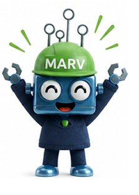

Stage 7 of 7 - Outcome
Every repair tells the same story. A surface saved.
Thirty years of expertise, on every claim. Press play to see the results MARV delivers, day after day.
Why the answer is always Magicman
Since 1993
Expert surface repair since 1993.
Our people
Directly employed Academy trained technicians.
UK wide
National coverage across the UK.
Guaranteed
12-month guarantee on every repair.

Every claim. Every surface. Every time.